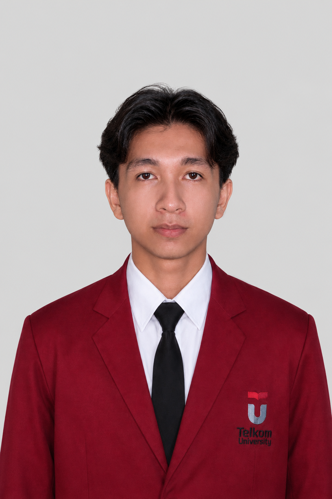

Gambar belum ditambahkan — letakkan file gambar di folder yang sama lalu sesuaikan atribut data-img1
Gambar belum ditambahkan
Gambar belum ditambahkan
Mahasiswa Teknik Komputer dengan pengalaman langsung menangani instalasi, konfigurasi, dan pemeliharaan jaringan , Menguasai Operasi Cloud, Pembuatan Aplikasi, dan Pembuatan web.

Saya Mochammad Fariz Zeth Mustafa, Lulusan Teknik Komputer yang tertarik pada dunia jaringan, infrastruktur IT, dan Jaringan Komputer. Pengalaman magang saya membawa saya dari administrasi data lapangan, desain grafis, hingga mengelola virtual environment dan cloud di lingkungan perusahaan.
Saya senang bekerja langsung di lapangan maupun di balik layar — memastikan jaringan berjalan stabil, sistem terkonfigurasi dengan benar, dan pelanggan atau tim mendapat layanan yang responsif.
Saya terbuka untuk peluang kerja di bidang IT Support, Network Engineering, maupun Customer Service. Anda dapat menghubungi saya melalui email, WhatsApp, atau LinkedIn di bawah ini.